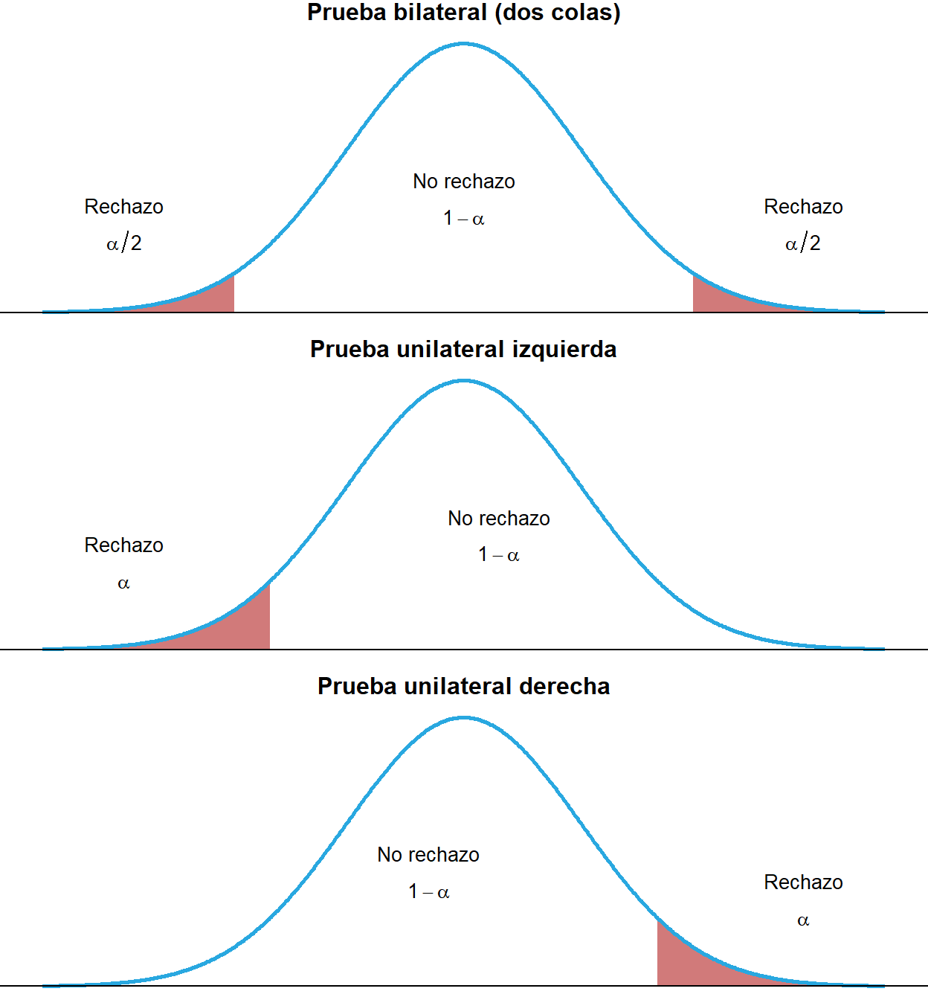
Capítulo 2: Pruebas de hipótesis
Objetivos del capítulo
Al terminar este capítulo, usted estará en capacidad de:
- plantear correctamente la hipótesis nula y la hipótesis alternativa de un problema;
- reconocer los errores tipo I y tipo II, y el significado del nivel de significancia;
- aplicar el procedimiento general de una prueba de hipótesis, con la región de rechazo y con el valor p;
- realizar pruebas para una media, una proporción y una varianza, y para comparar dos medias, dos proporciones y dos varianzas;
- relacionar las pruebas de hipótesis con los intervalos de confianza;
- realizar pruebas de hipótesis con R.
En el capítulo 1 estimamos parámetros con estimadores puntuales e intervalos de confianza. Ahora ampliamos la inferencia estadística con las pruebas de hipótesis, que permiten evaluar si una afirmación sobre un parámetro de la población puede rechazarse con base en la evidencia de una muestra. Un fabricante afirma que sus botellas contienen en promedio 500 ml; una clínica sospecha que sus pacientes tienen el colesterol más alto que el promedio nacional; un laboratorio quiere saber si un fármaco nuevo es más eficaz que el usual. En todos los casos hay una afirmación previa, y la pregunta es si los datos son compatibles con ella (Devore, 2008, p. 286; Walpole et al., 2012, p. 319).
1 Hipótesis estadística
Definición 1 (Hipótesis estadística) Una hipótesis estadística es una afirmación acerca de alguna característica desconocida de una población, generalmente el valor de un parámetro.
La esencia de una prueba de hipótesis es decidir si esa afirmación está apoyada o contradicha por la evidencia que proporciona una muestra aleatoria. Como la muestra no contiene toda la información de la población, esa decisión siempre se toma con algún riesgo de error, y la estadística permite controlarlo.
Ejemplo 1 El gerente de la pizzería de Estadística I afirma, en su publicidad, que el tiempo promedio de entrega es de 30 minutos. Un cliente inconforme cree que en realidad es mayor. Para averiguarlo, registra los tiempos de una muestra de entregas. Si el promedio de la muestra resulta, por ejemplo, de 30,4 minutos, la diferencia con 30 puede explicarse fácilmente por el azar del muestreo, y no habría razones para dudar del gerente. Pero si resulta de 34 minutos, parece difícil que se deba solo al azar, y el cliente tendría buenas razones para rechazar la afirmación. Las pruebas de hipótesis permiten precisar qué significa “difícil de explicar por el azar”.
1.1 Hipótesis nula y alternativa
En toda prueba se plantean dos hipótesis complementarias.
Definición 2 (Hipótesis nula y alternativa) La hipótesis nula, denotada \(H_0\), es la afirmación que se asume verdadera mientras no haya evidencia suficiente en su contra; representa el estado actual del conocimiento, lo que se ha afirmado o lo que no implica ningún cambio. La hipótesis alternativa, denotada \(H_1\) (o \(H_a\)), es la afirmación que contradice a \(H_0\) e indica un cambio o una diferencia respecto a ella.
La hipótesis alternativa suele expresar la pregunta que se quiere responder o la teoría que se quiere probar, de modo que su especificación es crucial. En el ejemplo de la pizzería, \(H_0: \mu = 30\) (lo que afirma el gerente) y \(H_1: \mu > 30\) (lo que sospecha el cliente).
Una analogía: el juicio
Una prueba de hipótesis funciona como un juicio. El acusado se presume inocente (\(H_0\)) mientras no se demuestre lo contrario; la fiscalía intenta demostrar que es culpable (\(H_1\)). Si las pruebas son contundentes, se le declara culpable (se rechaza \(H_0\)). Si no lo son, se le absuelve, lo que no significa que se haya demostrado su inocencia, sino solo que no hubo pruebas suficientes para condenarlo. Del mismo modo, al final de una prueba de hipótesis se dice “se rechaza \(H_0\)” o “no se rechaza \(H_0\)”, pero nunca “se acepta \(H_0\)” o “se demostró \(H_0\)” (Daniel, 1987, p. 223; Walpole et al., 2012, p. 321).
2 Errores tipo I y tipo II
Como la decisión se toma con información incompleta, puede ser equivocada. Hay dos formas de equivocarse (Tabla 1).
| \(H_0\) es verdadera | \(H_0\) es falsa | |
|---|---|---|
| Se rechaza \(H_0\) | Error tipo I | Decisión correcta |
| No se rechaza \(H_0\) | Decisión correcta | Error tipo II |
Definición 3 (Errores tipo I y tipo II) Se comete un error tipo I cuando se rechaza \(H_0\) siendo verdadera, y un error tipo II cuando no se rechaza \(H_0\) siendo falsa. Sus probabilidades se denotan \[ \alpha = P(\text{rechazar } H_0 \mid H_0 \text{ es verdadera}), \qquad \beta = P(\text{no rechazar } H_0 \mid H_0 \text{ es falsa}). \] La probabilidad \(\alpha\) se llama nivel de significancia de la prueba. La probabilidad \(1 - \beta\) de rechazar \(H_0\) cuando es falsa se llama potencia de la prueba.
En el juicio, el error tipo I es condenar a un inocente y el error tipo II, absolver a un culpable. Se considera más grave el primero, y por eso en las pruebas de hipótesis se fija de antemano un valor pequeño para \(\alpha\); por costumbre, se usa 0,05 o 0,01 (Walpole et al., 2012, p. 332).
Los dos errores están en tensión: para un tamaño de muestra fijo, si se disminuye \(\alpha\) (se exige más evidencia para rechazar \(H_0\)), aumenta \(\beta\). La única forma de reducir ambos a la vez es aumentar el tamaño de la muestra. Además, \(\beta\) no es un único número: depende de cuál sea el verdadero valor del parámetro. Es más fácil detectar que \(H_0\) es falsa cuando el valor verdadero está muy lejos del valor de \(H_0\), como veremos en el Ejemplo 2.
3 Pruebas de una y dos colas
En cada problema, la hipótesis nula afirma que un parámetro \(\theta\) es igual a un valor propuesto \(\theta_0\), y se plantea una y solo una de las tres hipótesis alternativas siguientes (Walpole et al., 2012, p. 330):
| Hipótesis | Tipo de prueba |
|---|---|
| \(H_0: \theta = \theta_0\) contra \(H_1: \theta \neq \theta_0\) | Bilateral o de dos colas |
| \(H_0: \theta = \theta_0\) contra \(H_1: \theta > \theta_0\) | Unilateral derecha o de cola derecha |
| \(H_0: \theta = \theta_0\) contra \(H_1: \theta < \theta_0\) | Unilateral izquierda o de cola izquierda |
Cuál usar depende de la pregunta del problema, que debe definirse antes de mirar los datos. Si solo interesa saber si hay un cambio, en cualquier dirección, la prueba es bilateral; si interesa una dirección particular (“mayor que”, “menor que”, “supera”, “es inferior”), es unilateral (Montgomery & Runger, 2018, p. 195).
3.1 ¿Dónde va la igualdad?
En este curso seguimos una regla que adoptan los textos de referencia: la hipótesis nula siempre lleva el signo de igualdad, y la hipótesis alternativa, una desigualdad estricta (\(\neq\), \(>\) o \(<\)) (Devore, 2008, p. 286; Montgomery & Runger, 2018, p. 195). No es una convención arbitraria; hay dos razones de fondo.
- El estadístico de prueba necesita un valor concreto. Para calcular la distribución del estadístico cuando \(H_0\) es verdadera, y con ella la región de rechazo y el valor p, hace falta un valor específico del parámetro. “\(\mu = 75\)” lo da; “\(\mu > 75\)” no, porque abarca infinitos valores.
- La alternativa es lo que se quiere demostrar. La evidencia de la muestra solo puede llevar a rechazar \(H_0\), nunca a demostrarla. Por eso, la afirmación que se quiere establecer con los datos (la sospecha del investigador, la “mejora”, el “cambio”) debe ir en \(H_1\), y siempre es una desigualdad estricta. Como dice Daniel, la hipótesis nula se plantea con el propósito expreso de ser rechazada: es el complemento de la conclusión que el investigador desea alcanzar, y por eso se le llama también hipótesis de no diferencia (Daniel, 1987, p. 223).
Cuando una afirmación incluye la igualdad (“al menos”, “como máximo”, “no más de”), esa afirmación queda del lado de \(H_0\). Por ejemplo, si una universidad afirma que el puntaje promedio es al menos 75 y se quiere cuestionar, se plantea \(H_0: \mu = 75\) contra \(H_1: \mu < 75\). Algunos textos escriben \(H_0: \mu \ge 75\). Las dos formas son compatibles: como explican Montgomery y Runger, cuando la alternativa lleva el signo \(<\), la afirmación implícita de la hipótesis nula puede entenderse como \(\ge\), y cuando lleva el signo \(>\), como \(\le\) (Montgomery & Runger, 2018, p. 195). La Tabla 3 sirve de guía para traducir las expresiones más comunes.
| Expresión en el enunciado | Símbolo | ¿Dónde va? |
|---|---|---|
| “es igual a”, “es de”, “no ha cambiado” | \(=\) | \(H_0\) |
| “al menos”, “no menos de”, “como mínimo” | \(\ge\) | \(H_0\) (con \(=\)); \(H_1\) con \(<\) |
| “como máximo”, “no más de”, “no supera” | \(\le\) | \(H_0\) (con \(=\)); \(H_1\) con \(>\) |
| “es diferente de”, “ha cambiado” | \(\neq\) | \(H_1\) |
| “es mayor que”, “supera”, “aumentó”, “es mejor” | \(>\) | \(H_1\) |
| “es menor que”, “disminuyó”, “es inferior” | \(<\) | \(H_1\) |
3.2 Región de rechazo y procedimiento general
La decisión se toma con un estadístico de prueba: un estadístico cuya distribución se conoce cuando \(H_0\) es verdadera. Son las mismas cantidades pivotales del capítulo 1, evaluadas en el valor \(\theta_0\) de la hipótesis nula. Si el valor observado del estadístico es muy poco probable bajo \(H_0\), se rechaza \(H_0\).
Definición 4 (Región de rechazo y valor crítico) La región de rechazo (o región crítica) es el conjunto de valores del estadístico de prueba que llevan a rechazar \(H_0\). Se elige de modo que la probabilidad de que el estadístico caiga en ella, cuando \(H_0\) es verdadera, sea igual al nivel de significancia \(\alpha\). El valor que separa la región de rechazo de la de no rechazo se llama valor crítico.
La región de rechazo se ubica en la dirección que indica \(H_1\): en las dos colas para una prueba bilateral, con un área \(\alpha/2\) en cada una; en la cola derecha o en la izquierda, con área \(\alpha\), para una unilateral (Figura 1).
Toda prueba de hipótesis sigue el mismo procedimiento:
- Plantear las hipótesis \(H_0\) y \(H_1\), de acuerdo con la pregunta.
- Fijar el nivel de significancia \(\alpha\).
- Elegir el estadístico de prueba adecuado, según el parámetro y los supuestos, y su distribución cuando \(H_0\) es verdadera.
- Determinar la región de rechazo, con los valores críticos de esa distribución.
- Calcular el valor observado del estadístico con los datos de la muestra.
- Decidir: si el valor observado cae en la región de rechazo, se rechaza \(H_0\); si no, no se rechaza.
- Concluir en el contexto del problema, en palabras que entienda quien hizo la pregunta.
3.3 El valor p
En lugar de comparar el estadístico con un valor crítico, es muy común, y es lo que reporta todo software estadístico, calcular el valor p.
Definición 5 (Valor p) El valor p es la probabilidad, calculada suponiendo que \(H_0\) es verdadera, de obtener un valor del estadístico de prueba igual o más extremo que el observado, en la dirección que indica \(H_1\).
Un valor p pequeño indica que los datos observados serían muy raros si \(H_0\) fuera cierta, y por eso constituyen evidencia en su contra. La regla de decisión es (Daniel, 1987, p. 231; Devore, 2008, p. 313):
Se rechaza \(H_0\) al nivel de significancia \(\alpha\) si y solo si valor p \(\le \alpha\).
Esta regla da siempre la misma decisión que la región de rechazo, pero tiene una ventaja: indica qué tan fuerte es la evidencia, y permite a cada lector tomar su decisión con el \(\alpha\) que prefiera (Montgomery & Runger, 2018, p. 203).
Lo que el valor p no es
El valor p no es la probabilidad de que \(H_0\) sea verdadera, ni la probabilidad de haberse equivocado. Es una probabilidad sobre los datos, calculada suponiendo que \(H_0\) es verdadera. Tampoco mide el tamaño ni la importancia práctica de un efecto: con muestras muy grandes, diferencias insignificantes en la práctica pueden dar valores p muy pequeños. Por eso, la Asociación Estadounidense de Estadística recomienda no basar las conclusiones únicamente en si el valor p es menor que 0,05, y acompañarlo siempre de una estimación del efecto, por ejemplo con un intervalo de confianza (Wasserstein & Lazar, 2016).
3.4 Relación con los intervalos de confianza
Las pruebas bilaterales y los intervalos de confianza son dos caras de la misma moneda (Montgomery & Runger, 2018, p. 206):
Se rechaza \(H_0: \theta = \theta_0\) a favor de \(H_1: \theta \neq \theta_0\), al nivel de significancia \(\alpha\), si y solo si \(\theta_0\) no está en el intervalo de confianza del \(100(1-\alpha)\) % para \(\theta\).
Esto justifica el razonamiento que usamos en el capítulo 1. Por ejemplo, como el intervalo del 95 % para la diferencia de las proporciones de aprobación de dos universidades, \((-0{,}005;\ 0{,}105)\), contiene el 0, la prueba de \(H_0: p_A = p_B\) contra \(H_1: p_A \neq p_B\) con \(\alpha = 0{,}05\) no rechaza la hipótesis nula.
4 Pruebas para una media
Supuestos
- \(X_1, X_2, \ldots, X_n\) es una muestra aleatoria de una población normal con media \(\mu\) desconocida.
- Se quiere probar \(H_0: \mu = \mu_0\) contra una de las tres alternativas \(\mu \neq \mu_0\), \(\mu > \mu_0\) o \(\mu < \mu_0\).
4.1 Caso 1: varianza conocida
Si se conoce \(\sigma^2\) y \(H_0\) es verdadera, el estadístico \[ Z = \frac{\bar{X} - \mu_0}{\sigma/\sqrt{n}} \] tiene distribución normal estándar. Denotaremos con \(z_{\text{obs}}\) su valor observado con los datos de la muestra. Los criterios de rechazo se resumen en la Tabla 4.
| Hipótesis alternativa | Se rechaza \(H_0\) si | Valor p |
|---|---|---|
| \(\mu \neq \mu_0\) | \(\lvert z_{\text{obs}}\rvert > z_{1-\alpha/2}\) | \(2\,P(Z > \lvert z_{\text{obs}}\rvert)\) |
| \(\mu > \mu_0\) | \(z_{\text{obs}} > z_{1-\alpha}\) | \(P(Z > z_{\text{obs}})\) |
| \(\mu < \mu_0\) | \(z_{\text{obs}} < -z_{1-\alpha}\) | \(P(Z < z_{\text{obs}})\) |
Si la población no es normal pero la muestra es grande, la prueba es aproximadamente válida por el teorema central del límite (Montgomery & Runger, 2018, p. 215).
Ejemplo 2 Los siguientes datos son los tiempos de armado, en minutos, de 20 unidades seleccionadas al azar:
9,8; 10,4; 10,6; 9,6; 9,7; 9,9; 10,9; 11,1; 9,6; 10,2; 10,3; 9,6; 9,9; 11,2; 10,6; 9,8; 10,5; 10,1; 10,5; 9,7.
Se supone que el tiempo de armado es normal con desviación estándar conocida de 0,6 minutos. ¿Hay evidencia, con \(\alpha = 0{,}05\), de que el tiempo promedio de armado es mayor de 10 minutos?
- Hipótesis: \(H_0: \mu = 10\) contra \(H_1: \mu > 10\) (cola derecha).
- Nivel de significancia: \(\alpha = 0{,}05\).
- Estadístico de prueba: \(Z = (\bar{X} - 10)/(0{,}6/\sqrt{20})\), que es \(N(0, 1)\) si \(H_0\) es verdadera.
- Región de rechazo: se rechaza \(H_0\) si \(z_{\text{obs}} > z_{0{,}95} = 1{,}645\).
- Valor observado: \(\bar{x} = 204/20 = 10{,}2\) minutos, y \[ z_{\text{obs}} = \frac{10{,}2 - 10}{0{,}6/\sqrt{20}} = 1{,}49 . \]
- Decisión: como \(1{,}49 < 1{,}645\), no se rechaza \(H_0\). Con el valor p: \(P(Z > 1{,}49) = 0{,}068 > 0{,}05\), la misma decisión.
- Conclusión: con un nivel de significancia de 0,05, los datos no aportan evidencia suficiente para afirmar que el tiempo promedio de armado es mayor de 10 minutos.
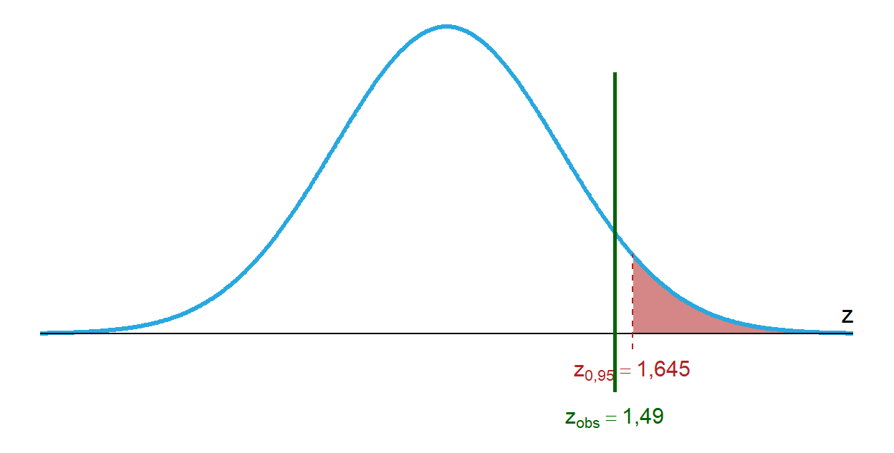
Potencia de la prueba. Rechazar \(H_0\) equivale a que \(\bar{x} > 10 + 1{,}645 \times 0{,}6/\sqrt{20} = 10{,}22\) minutos. Si el verdadero tiempo promedio fuera de 10,3 minutos, la probabilidad de no rechazar \(H_0\) (el error tipo II) sería \(\beta = P(\bar{X} \le 10{,}22 \mid \mu = 10{,}3) = 0{,}277\), y la potencia, \(0{,}723\). Si fuera de 10,5 minutos, \(\beta = 0{,}019\) y la potencia, \(0{,}981\): cuanto más lejos está el valor verdadero de \(\mu_0\), más fácil es detectarlo.
Ejemplo 3 Según un estudio médico, el nivel promedio de colesterol total en adultos sanos mayores de 40 años es de 200 mg/dL, con una desviación estándar de 10 mg/dL. Unos investigadores quieren saber si los pacientes de una clínica privada tienen un colesterol promedio mayor. En una muestra aleatoria de 15 pacientes se obtuvieron:
212, 198, 225, 204, 217, 209, 201, 215, 202, 219, 208, 205, 210, 218, 203.
Se plantea \(H_0: \mu = 200\) contra \(H_1: \mu > 200\), con \(\alpha = 0{,}05\). La media muestral es \(\bar{x} = 3146/15 = 209{,}73\) mg/dL y \[ z_{\text{obs}} = \frac{209{,}73 - 200}{10/\sqrt{15}} = 3{,}77 . \] Como \(3{,}77 > 1{,}645\), se rechaza \(H_0\); el valor p es \(P(Z > 3{,}77) \approx 0{,}0001\). Hay evidencia muy fuerte de que el colesterol promedio de los pacientes de la clínica es mayor de 200 mg/dL.
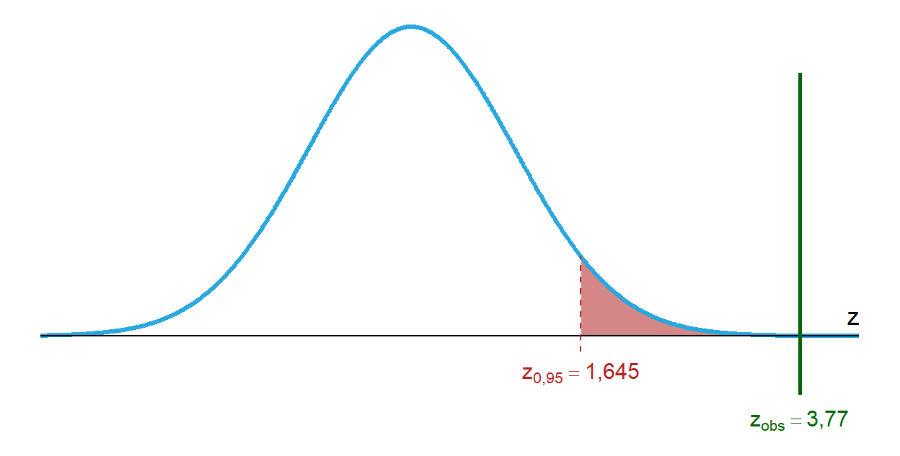
4.2 Caso 2: varianza desconocida
Si no se conoce \(\sigma^2\), se reemplaza por \(S^2\) y, si \(H_0\) es verdadera, \[ T = \frac{\bar{X} - \mu_0}{S/\sqrt{n}} \sim t(n - 1) . \] Los criterios son los mismos de la Tabla 4, con los cuantiles de la \(t\): se rechaza \(H_0\) si \(\lvert t_{\text{obs}}\rvert > t_{1-\alpha/2;\,n-1}\) (bilateral), si \(t_{\text{obs}} > t_{1-\alpha;\,n-1}\) (cola derecha) o si \(t_{\text{obs}} < -t_{1-\alpha;\,n-1}\) (cola izquierda). Esta es la prueba t para una media.
Ejemplo 4 Una universidad afirma que los estudiantes de un programa de maestría obtienen en promedio al menos 75 puntos en una prueba estandarizada. Una investigadora sospecha que el promedio es menor. En una muestra aleatoria de 12 estudiantes se obtuvieron los puntajes: 72, 74, 78, 69, 71, 73, 70, 76, 68, 74, 71, 69. ¿Hay evidencia, con \(\alpha = 0{,}05\), de que el promedio es menor que 75?
Se plantea \(H_0: \mu = 75\) contra \(H_1: \mu < 75\). Con \(\bar{x} = 72{,}08\) y \(s = 3{,}03\), \[ t_{\text{obs}} = \frac{72{,}08 - 75}{3{,}03/\sqrt{12}} = -3{,}34 . \] Con 11 grados de libertad, \(-t_{0{,}95;\,11} = -1{,}796\). Como \(-3{,}34 < -1{,}796\), se rechaza \(H_0\); el valor p es \(P(T < -3{,}34) = 0{,}003\). Hay evidencia de que el puntaje promedio de los estudiantes de la maestría es menor de 75 puntos, contrario a lo que afirma la universidad.
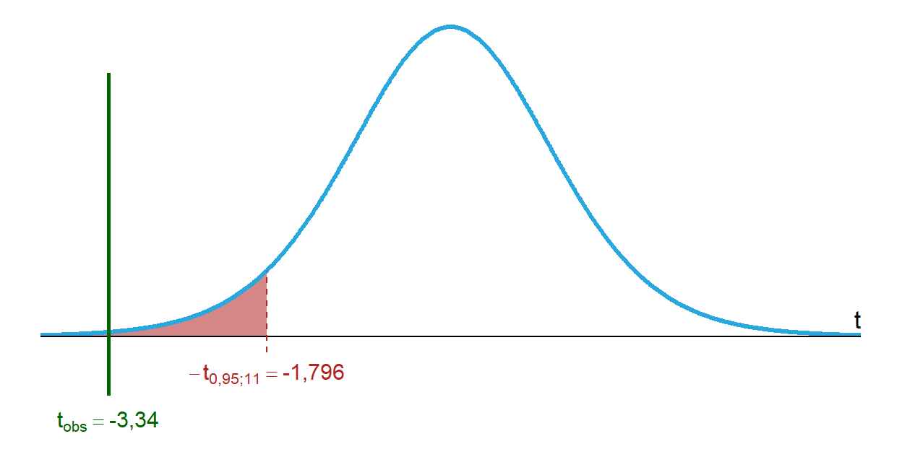
En R, la prueba t se hace con t.test(), indicando el valor \(\mu_0\) con mu y la dirección de \(H_1\) con alternative ("two.sided", "greater" o "less"):
puntajes <- c(72, 74, 78, 69, 71, 73, 70, 76, 68, 74, 71, 69)
t.test(puntajes, mu = 75, alternative = "less")
One Sample t-test
data: puntajes
t = -3.3357, df = 11, p-value = 0.003322
alternative hypothesis: true mean is less than 75
95 percent confidence interval:
-Inf 73.6536
sample estimates:
mean of x
72.08333 # Prueba z (varianza conocida), con la fórmula
armado <- c(9.8, 10.4, 10.6, 9.6, 9.7, 9.9, 10.9, 11.1, 9.6, 10.2,
10.3, 9.6, 9.9, 11.2, 10.6, 9.8, 10.5, 10.1, 10.5, 9.7)
z_obs <- (mean(armado) - 10) / (0.6 / sqrt(20))
c(z_obs = z_obs, valor_p = pnorm(z_obs, lower.tail = FALSE)) z_obs valor_p
1.49071198 0.06801856 La salida de t.test() muestra el valor observado del estadístico (t), los grados de libertad (df), el valor p (p-value) y, además, un intervalo de confianza, que en una prueba unilateral es también unilateral.
5 Prueba para una proporción
Supuestos
- Se observan \(n\) ensayos de Bernoulli independientes, en los que la característica de interés está presente con probabilidad \(p\).
- Se quiere probar \(H_0: p = p_0\) contra \(p \neq p_0\), \(p > p_0\) o \(p < p_0\).
- La muestra es grande: \(np_0 \ge 5\) y \(n(1 - p_0) \ge 5\).
Si \(H_0\) es verdadera, por el teorema central del límite, \[ Z = \frac{\hat{p} - p_0}{\sqrt{p_0(1 - p_0)/n}} \approx N(0, 1). \] Observe que, a diferencia del intervalo de confianza, en el error estándar se usa \(p_0\) y no \(\hat{p}\): la prueba se construye suponiendo que \(H_0\) es verdadera, y en ese caso el error estándar es conocido (Daniel, 1987, pp. 261-262; Walpole et al., 2012, p. 362). Los criterios de rechazo son los de la Tabla 4.
Ejemplo 5 Se cree que un fármaco comúnmente recetado para aliviar la tensión nerviosa es eficaz en el 60 % de los pacientes. Un fármaco nuevo se administró a 100 adultos con tensión nerviosa, y 70 experimentaron alivio. ¿Es esta evidencia suficiente, con \(\alpha = 0{,}05\), para concluir que el nuevo fármaco es superior? (Walpole et al., 2012, p. 363)
Se plantea \(H_0: p = 0{,}6\) contra \(H_1: p > 0{,}6\). Con \(\hat{p} = 0{,}70\), \[ z_{\text{obs}} = \frac{0{,}70 - 0{,}60}{\sqrt{0{,}6 \times 0{,}4/100}} = 2{,}04 . \] Como \(2{,}04 > 1{,}645\), se rechaza \(H_0\); el valor p es \(0{,}021\). Hay evidencia de que el nuevo fármaco es más eficaz que el usual.
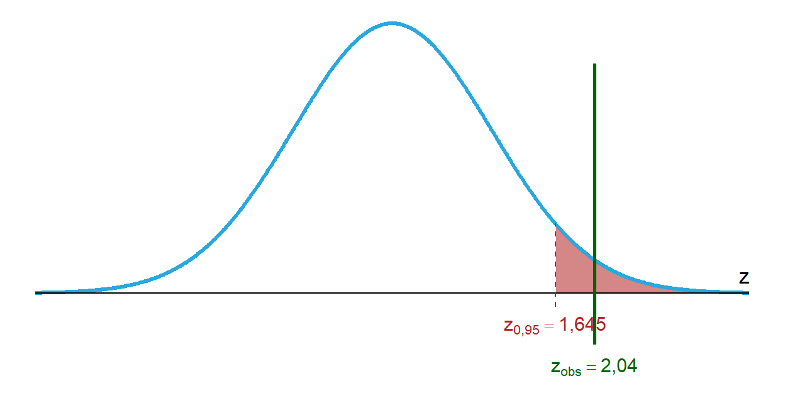
Ejemplo 6 Una empresa afirma que el 80 % de sus pedidos se entregan a tiempo. Un auditor revisa una muestra aleatoria de 150 entregas y encuentra que 110 llegaron a tiempo. ¿Hay evidencia, con \(\alpha = 0{,}05\), para cuestionar la afirmación?
Como el auditor quiere saber si la afirmación es falsa, sin una dirección previa, la prueba es bilateral: \(H_0: p = 0{,}8\) contra \(H_1: p \neq 0{,}8\). Con \(\hat{p} = 110/150 = 0{,}733\), \[ z_{\text{obs}} = \frac{0{,}733 - 0{,}80}{\sqrt{0{,}8 \times 0{,}2/150}} = -2{,}04 . \] Como \(\lvert -2{,}04\rvert > 1{,}96\), se rechaza \(H_0\); el valor p es \(2 \times P(Z > 2{,}04) = 0{,}041\). Hay evidencia de que la proporción de entregas a tiempo es distinta del 80 %; de hecho, según la muestra, es menor.
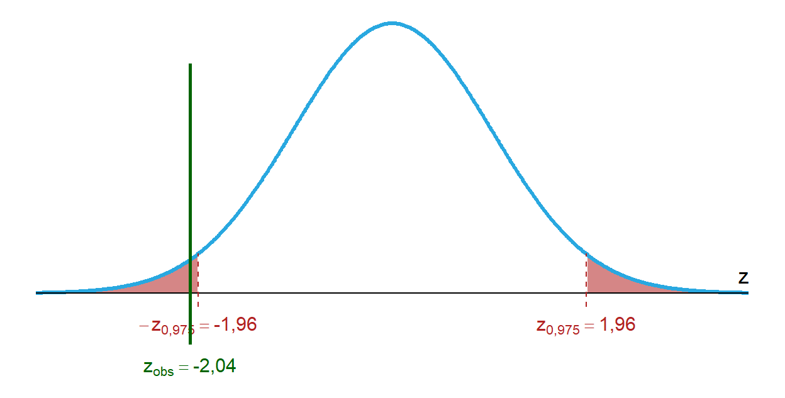
prop.test(70, 100, p = 0.6, alternative = "greater", correct = FALSE)
1-sample proportions test without continuity correction
data: 70 out of 100, null probability 0.6
X-squared = 4.1667, df = 1, p-value = 0.02061
alternative hypothesis: true p is greater than 0.6
95 percent confidence interval:
0.6201679 1.0000000
sample estimates:
p
0.7 Con correct = FALSE, prop.test() realiza exactamente la prueba \(z\) anterior; reporta el estadístico X-squared, que es el cuadrado de \(z_{\text{obs}}\) (\(2{,}04^2 = 4{,}17\)), con el mismo valor p.
6 Prueba para una varianza
Supuestos
- \(X_1, X_2, \ldots, X_n\) es una muestra aleatoria de una población normal con media y varianza desconocidas.
- Se quiere probar \(H_0: \sigma^2 = \sigma_0^2\) contra \(\sigma^2 \neq \sigma_0^2\), \(\sigma^2 > \sigma_0^2\) o \(\sigma^2 < \sigma_0^2\).
Si \(H_0\) es verdadera, \[ \chi^2 = \frac{(n - 1)S^2}{\sigma_0^2} \sim \chi^2(n - 1), \] y los criterios de rechazo son los de la Tabla 5.
| Hipótesis alternativa | Se rechaza \(H_0\) si |
|---|---|
| \(\sigma^2 \neq \sigma_0^2\) | \(\chi^2_{\text{obs}} < \chi^2_{\alpha/2;\,n-1}\) o \(\chi^2_{\text{obs}} > \chi^2_{1-\alpha/2;\,n-1}\) |
| \(\sigma^2 > \sigma_0^2\) | \(\chi^2_{\text{obs}} > \chi^2_{1-\alpha;\,n-1}\) |
| \(\sigma^2 < \sigma_0^2\) | \(\chi^2_{\text{obs}} < \chi^2_{\alpha;\,n-1}\) |
Como la chi-cuadrado no es simétrica, en la prueba bilateral los dos valores críticos son distintos y hay que calcular ambos. Igual que el intervalo para la varianza, esta prueba exige normalidad (Montgomery & Runger, 2018, p. 224).
Ejemplo 7 Una embotelladora afirma que la varianza del volumen de llenado de sus botellas de un litro es como máximo de 0,0004 litros², es decir, una desviación estándar de 0,02 litros (20 ml). Un ingeniero de calidad sospecha que la varianza es mayor y toma una muestra de 10 botellas, con los volúmenes (en litros): 1,01; 0,98; 1,00; 1,02; 1,03; 0,99; 0,97; 1,05; 0,96; 1,00. ¿Hay evidencia, con \(\alpha = 0{,}05\), de que la varianza es mayor que 0,0004?
Se plantea \(H_0: \sigma^2 = 0{,}0004\) contra \(H_1: \sigma^2 > 0{,}0004\). La varianza muestral es \(s^2 = 0{,}000766\), y \[ \chi^2_{\text{obs}} = \frac{9 \times 0{,}000766}{0{,}0004} = 17{,}22 . \] Con 9 grados de libertad, \(\chi^2_{0{,}95;\,9} = 16{,}92\). Como \(17{,}22 > 16{,}92\), se rechaza \(H_0\) (valor p \(= 0{,}045\)). Hay evidencia de que la variabilidad del llenado es mayor que la que afirma la empresa.
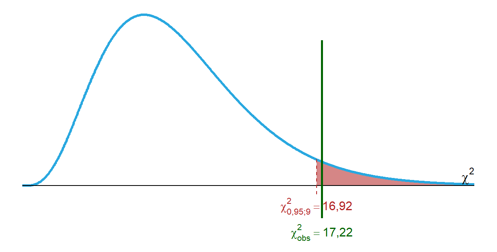
Ejemplo 8 Un call center afirma que la varianza del tiempo de respuesta de sus agentes es de 36 segundos². Un supervisor sospecha que ha cambiado, en cualquier dirección, y toma una muestra de 15 llamadas: 32, 41, 39, 36, 34, 33, 38, 43, 37, 35, 39, 42, 31, 30, 36 segundos. ¿Hay evidencia, con \(\alpha = 0{,}05\), de que la varianza es diferente de 36?
Se plantea \(H_0: \sigma^2 = 36\) contra \(H_1: \sigma^2 \neq 36\). Con \(s^2 = 15{,}83\), \[ \chi^2_{\text{obs}} = \frac{14 \times 15{,}83}{36} = 6{,}16 . \] Los valores críticos, con 14 grados de libertad, son \(\chi^2_{0{,}025;\,14} = 5{,}63\) y \(\chi^2_{0{,}975;\,14} = 26{,}12\). Como \(6{,}16\) está entre ellos, no se rechaza \(H_0\) (valor p \(= 0{,}075\)). Con \(\alpha = 0{,}05\), no hay evidencia suficiente de que la varianza haya cambiado, aunque la varianza muestral es bastante menor que 36; con \(\alpha = 0{,}10\) sí se rechazaría.
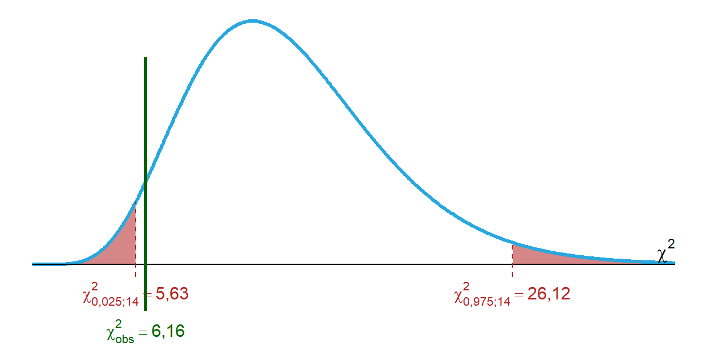
R no trae una función incorporada para esta prueba, pero se calcula fácilmente:
llamadas <- c(32, 41, 39, 36, 34, 33, 38, 43, 37, 35, 39, 42, 31, 30, 36)
n <- length(llamadas)
chi_obs <- (n - 1) * var(llamadas) / 36
valor_p <- 2 * min(pchisq(chi_obs, n - 1), pchisq(chi_obs, n - 1, lower.tail = FALSE))
c(chi_obs = chi_obs, valor_p = valor_p) chi_obs valor_p
6.15555556 0.07516603 En la prueba bilateral surge una dificultad: con distribuciones simétricas, como la normal o la t, el valor p bilateral es simplemente el doble del unilateral, pero con una distribución asimétrica, como la chi-cuadrado, no hay una única forma de calcularlo. La convención más usada, que es la que aplica R en funciones como var.test(), es duplicar el área de la cola más pequeña; otros autores recomiendan reportar el valor p unilateral junto con la dirección en la que los datos se apartan de \(H_0\) (Daniel, 1987, p. 268).
7 Pruebas para la diferencia de dos medias
Para comparar las medias de dos poblaciones se usan las mismas cantidades pivotales del capítulo 1, evaluadas en el valor de la hipótesis nula. Con la notación de ese capítulo, \(X_1, \ldots, X_{n_X}\) y \(Y_1, \ldots, Y_{n_Y}\) son muestras de dos poblaciones con medias \(\mu_X\) y \(\mu_Y\) y varianzas \(\sigma_X^2\) y \(\sigma_Y^2\), y se prueba \[ H_0: \mu_X - \mu_Y = \delta_0 \] contra una de las alternativas \(\mu_X - \mu_Y \neq \delta_0\), \(\mu_X - \mu_Y > \delta_0\) o \(\mu_X - \mu_Y < \delta_0\). El valor \(\delta_0\) es la diferencia propuesta entre las medias; casi siempre es 0, que equivale a probar si las dos medias son iguales, pero puede ser otro valor, por ejemplo si se quiere saber si una media supera a la otra en más de cierta cantidad.
En todos los casos, los criterios de rechazo tienen la misma forma de la Tabla 4: en la prueba bilateral se compara el valor absoluto del estadístico con el cuantil \(1 - \alpha/2\), y en las unilaterales se compara el estadístico con el cuantil \(1 - \alpha\) (cola derecha) o con su negativo (cola izquierda), usando la distribución que corresponda en cada caso.
7.1 Caso 1: varianzas conocidas
Supuestos
- Las muestras son independientes y provienen de poblaciones normales (o son grandes).
- Las varianzas \(\sigma_X^2\) y \(\sigma_Y^2\) son conocidas.
Si \(H_0\) es verdadera, \[ Z = \frac{(\bar{X} - \bar{Y}) - \delta_0}{\sqrt{\dfrac{\sigma_X^2}{n_X} + \dfrac{\sigma_Y^2}{n_Y}}} \sim N(0, 1) . \]
Ejemplo 9 En el ejemplo de las llantas del capítulo 1, ¿hay evidencia, con \(\alpha = 0{,}05\), de que la distancia media de frenado con la marca A es menor que con la marca B? Se plantea \(H_0: \mu_A - \mu_B = 0\) contra \(H_1: \mu_A - \mu_B < 0\). Con \(\bar{x}_A = 42{,}347\), \(\bar{x}_B = 45{,}164\), \(\sigma_A^2 = 4\) y \(\sigma_B^2 = 5{,}2\), \[ z_{\text{obs}} = \frac{42{,}347 - 45{,}164}{\sqrt{4/30 + 5{,}2/25}} = -4{,}82 . \] Como \(-4{,}82 < -1{,}645\), se rechaza \(H_0\) (valor p \(< 0{,}0001\)): la marca A frena en menos distancia, lo mismo que había mostrado el intervalo de confianza.
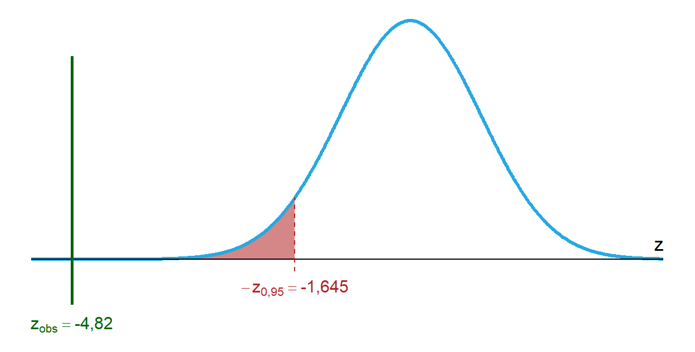
7.2 Caso 2: varianzas desconocidas pero iguales
Supuestos
- Las muestras son independientes y provienen de poblaciones normales.
- Las varianzas son desconocidas pero iguales.
Si \(H_0\) es verdadera, con la varianza combinada \(S_p^2 = \dfrac{(n_X - 1)S_X^2 + (n_Y - 1)S_Y^2}{n_X + n_Y - 2}\), \[ T = \frac{(\bar{X} - \bar{Y}) - \delta_0}{S_p\sqrt{\dfrac{1}{n_X} + \dfrac{1}{n_Y}}} \sim t(n_X + n_Y - 2) . \]
Ejemplo 10 Se quiere determinar si el nivel de ruido ambiental afecta el tiempo que las personas tardan en completar una tarea. Se eligieron al azar 32 personas y se dividieron en dos grupos de 16: el grupo 1 trabajó con un nivel de ruido moderado y el grupo 2 con un nivel de ruido más severo. Los tiempos, en minutos, fueron:
Nivel 1: 14, 12, 15, 15, 11, 16, 17, 12, 14, 13, 18, 13, 18, 15, 16, 11.
Nivel 2: 20, 22, 18, 18, 19, 15, 18, 15, 22, 18, 19, 15, 21, 22, 18, 16.
Suponiendo poblaciones normales independientes con varianzas iguales pero desconocidas, ¿hay razones para creer, con \(\alpha = 0{,}01\), que el tiempo promedio con el nivel 2 es mayor por más de dos minutos que con el nivel 1?
- Hipótesis: \(H_0: \mu_2 - \mu_1 = 2\) contra \(H_1: \mu_2 - \mu_1 > 2\). Aquí \(\delta_0 = 2\).
- Nivel de significancia: \(\alpha = 0{,}01\).
- Estadístico: \(T\) con \(16 + 16 - 2 = 30\) grados de libertad.
- Región de rechazo: se rechaza \(H_0\) si \(t_{\text{obs}} > t_{0{,}99;\,30} = 2{,}457\).
- Valor observado: \(\bar{x}_1 = 230/16 = 14{,}375\), \(\bar{x}_2 = 296/16 = 18{,}5\), \(s_1^2 = 5{,}183\) y \(s_2^2 = 6{,}000\). La varianza combinada es \(s_p^2 = (15 \times 5{,}183 + 15 \times 6{,}000)/30 = 5{,}592\), con \(s_p = 2{,}365\), y \[ t_{\text{obs}} = \frac{(18{,}5 - 14{,}375) - 2}{2{,}365\sqrt{1/16 + 1/16}} = 2{,}54 . \]
- Decisión: como \(2{,}54 > 2{,}457\), se rechaza \(H_0\) (valor p \(= 0{,}008\)).
- Conclusión: con un nivel de significancia del 1 %, hay evidencia de que con el ruido severo el tiempo promedio para completar la tarea es mayor en más de dos minutos que con el ruido moderado.
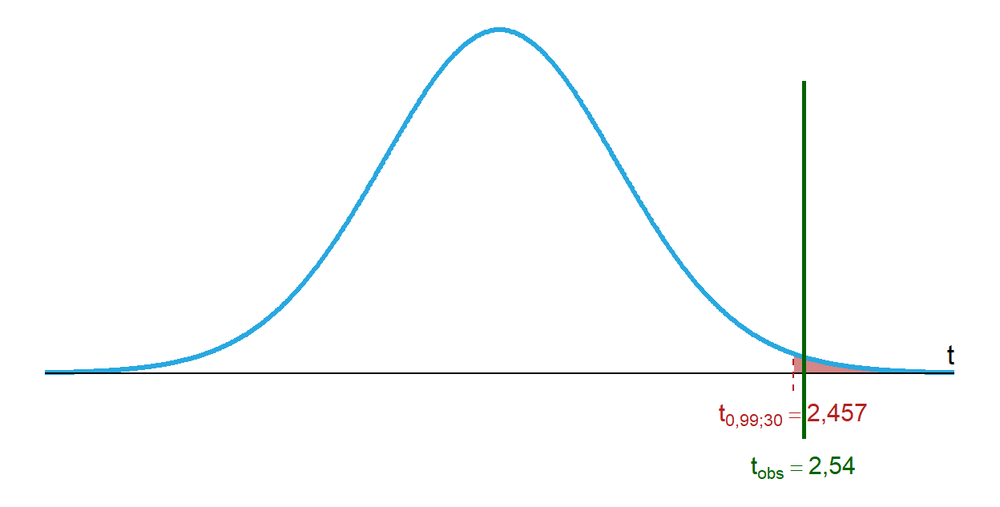
7.3 Caso 3: varianzas desconocidas y diferentes
Supuestos
- Las muestras son independientes y provienen de poblaciones normales.
- Las varianzas son desconocidas y no se puede suponer que sean iguales.
Si \(H_0\) es verdadera, el estadístico \[ T = \frac{(\bar{X} - \bar{Y}) - \delta_0}{\sqrt{\dfrac{S_X^2}{n_X} + \dfrac{S_Y^2}{n_Y}}} \] tiene aproximadamente una distribución \(t\) con los grados de libertad \(\nu\) de Welch del capítulo 1, redondeados hacia abajo.
Ejemplo 11 En la pizzería, ¿son diferentes los tiempos medios de entrega de las sucursales East y West? Con los datos del capítulo 1 (410 entregas de East, con media 31,07 y desviación estándar 6,68 minutos; 435 de West, con media 35,19 y desviación estándar 5,73), se plantea \(H_0: \mu_E - \mu_W = 0\) contra \(H_1: \mu_E - \mu_W \neq 0\), y \[ t_{\text{obs}} = \frac{31{,}07 - 35{,}19}{\sqrt{6{,}68^2/410 + 5{,}73^2/435}} = -9{,}61, \] con \(\nu = 807\) grados de libertad. Los valores críticos son \(\pm t_{0{,}975;\,807} = \pm 1{,}963\), y como \(\lvert -9{,}61\rvert > 1{,}963\), se rechaza \(H_0\). El valor p es prácticamente cero, de modo que hay evidencia contundente de que los tiempos medios de las dos sucursales son diferentes.
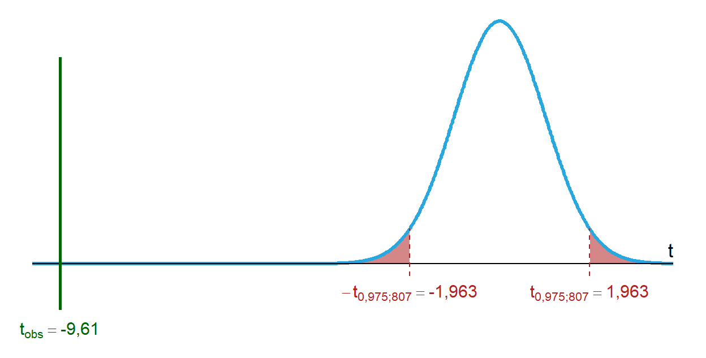
7.4 Muestras pareadas
Supuestos
- Se observan \(n\) parejas \((X_i, Y_i)\), y las diferencias \(D_i = X_i - Y_i\) son una muestra aleatoria de una población normal con media \(\mu_D\).
Como en el capítulo 1, se calculan las diferencias dentro de cada pareja y se aplica la prueba t para una media a esas diferencias. Para probar \(H_0: \mu_D = \delta_0\), si \(H_0\) es verdadera, \[ T = \frac{\bar{D} - \delta_0}{S_D/\sqrt{n}} \sim t(n - 1) . \] Esta es la prueba t pareada.
Ejemplo 12 En el ejemplo de los precios de 8 productos en dos supermercados del capítulo 1, ¿hay evidencia, con \(\alpha = 0{,}05\), de que el supermercado B es más caro? Con las diferencias B − A, se plantea \(H_0: \mu_D = 0\) contra \(H_1: \mu_D > 0\). Con \(\bar{d} = 0{,}3875\) y \(s_d = 0{,}2642\), \[ t_{\text{obs}} = \frac{0{,}3875}{0{,}2642/\sqrt{8}} = 4{,}15 > t_{0{,}95;\,7} = 1{,}895, \] de modo que se rechaza \(H_0\) (valor p \(= 0{,}002\)): el supermercado B es, en promedio, más caro.
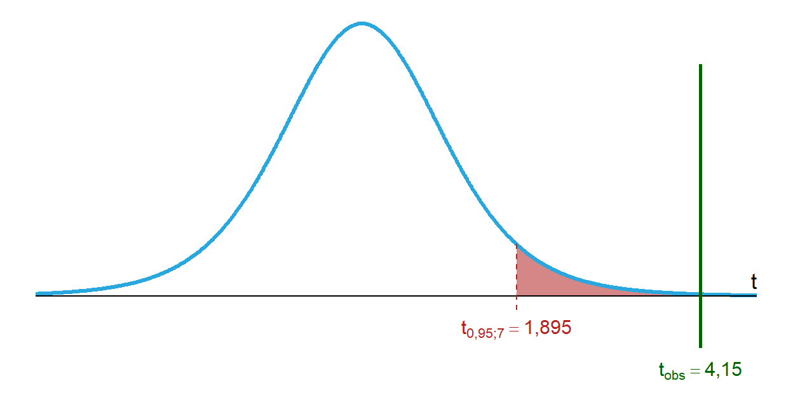
8 Prueba para la diferencia de dos proporciones
Supuestos
- Se toman dos muestras aleatorias independientes, de tamaños \(n_X\) y \(n_Y\), de poblaciones con proporciones \(p_X\) y \(p_Y\).
- Se prueba \(H_0: p_X = p_Y\) contra \(p_X \neq p_Y\), \(p_X > p_Y\) o \(p_X < p_Y\).
- Las muestras son grandes.
Si \(H_0\) es verdadera, las dos poblaciones tienen la misma proporción \(p\), que no se conoce. Como las dos muestras estiman el mismo valor, se combinan para obtener una mejor estimación, la proporción combinada: \[ \hat{p} = \frac{X + Y}{n_X + n_Y}, \] donde \(X\) y \(Y\) son los números de éxitos en cada muestra. El estadístico de prueba es \[ Z = \frac{\hat{p}_X - \hat{p}_Y}{\sqrt{\hat{p}(1 - \hat{p})\left(\dfrac{1}{n_X} + \dfrac{1}{n_Y}\right)}} \approx N(0, 1) , \] y los criterios de rechazo son los de la Tabla 4. Observe la diferencia con el intervalo de confianza del capítulo 1, que usa cada proporción por separado en el error estándar: la prueba usa la proporción combinada porque se construye suponiendo que \(H_0\), es decir \(p_X = p_Y\), es verdadera (Walpole et al., 2012, p. 364).
Ejemplo 13 Se realizará una votación entre los residentes de un pueblo y del condado circundante para decidir si se construye una planta química. Como el sitio está dentro de los límites del pueblo, muchos votantes del condado creen que la propuesta se aprobará por la gran proporción de votantes del pueblo que la apoyan. En una encuesta, 120 de 200 votantes del pueblo y 240 de 500 del condado están a favor. ¿Es mayor, con \(\alpha = 0{,}05\), la proporción de votantes del pueblo que apoya la propuesta? (Walpole et al., 2012, p. 364)
Se plantea \(H_0: p_P = p_C\) contra \(H_1: p_P > p_C\). Las proporciones muestrales son \(\hat{p}_P = 0{,}60\) y \(\hat{p}_C = 0{,}48\), y la combinada es \(\hat{p} = (120 + 240)/(200 + 500) = 0{,}514\). Entonces \[ z_{\text{obs}} = \frac{0{,}60 - 0{,}48}{\sqrt{0{,}514 \times 0{,}486\,(1/200 + 1/500)}} = 2{,}87 . \] Como \(2{,}87 > 1{,}645\), se rechaza \(H_0\) (valor p \(= 0{,}002\)): la proporción de votantes que apoya la planta es mayor en el pueblo que en el condado.
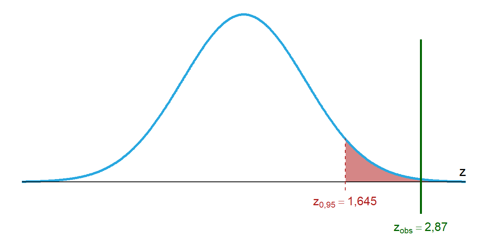
Ejemplo 14 Una ONG quiere saber si la proporción de personas que reciclan es menor en la ciudad A que en la ciudad B. En la ciudad A, 42 de 100 personas encuestadas reciclan, y en la ciudad B, 55 de 100. Con \(\alpha = 0{,}05\), se plantea \(H_0: p_A = p_B\) contra \(H_1: p_A < p_B\). Con \(\hat{p}_A = 0{,}42\), \(\hat{p}_B = 0{,}55\) y \(\hat{p} = 97/200 = 0{,}485\), \[ z_{\text{obs}} = \frac{0{,}42 - 0{,}55}{\sqrt{0{,}485 \times 0{,}515\,(1/100 + 1/100)}} = -1{,}84 . \] Como \(-1{,}84 < -1{,}645\), se rechaza \(H_0\) (valor p \(= 0{,}033\)): hay evidencia de que en la ciudad A se recicla menos. Observe, sin embargo, que el valor p está cerca de 0,05: con \(\alpha = 0{,}01\) no se rechazaría.
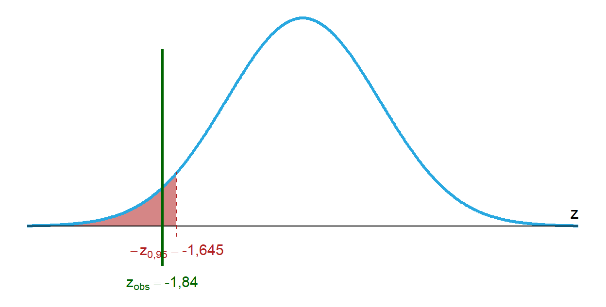
9 Prueba para la razón de dos varianzas
Supuestos
- Las muestras son independientes y provienen de poblaciones normales con medias y varianzas desconocidas.
- Se prueba \(H_0: \sigma_X^2 = \sigma_Y^2\) contra \(\sigma_X^2 \neq \sigma_Y^2\), \(\sigma_X^2 > \sigma_Y^2\) o \(\sigma_X^2 < \sigma_Y^2\).
Recordemos que \[ F = \frac{S_X^2/\sigma_X^2}{S_Y^2/\sigma_Y^2} \sim F(n_X - 1,\ n_Y - 1) . \] Si \(H_0\) es verdadera, las varianzas poblacionales se cancelan y el estadístico de prueba es simplemente el cociente de las varianzas muestrales: \[ F = \frac{S_X^2}{S_Y^2} \sim F(n_X - 1,\ n_Y - 1) . \]
| Hipótesis alternativa | Se rechaza \(H_0\) si |
|---|---|
| \(\sigma_X^2 \neq \sigma_Y^2\) | \(f_{\text{obs}} < f_{\alpha/2;\,n_X-1,\,n_Y-1}\) o \(f_{\text{obs}} > f_{1-\alpha/2;\,n_X-1,\,n_Y-1}\) |
| \(\sigma_X^2 > \sigma_Y^2\) | \(f_{\text{obs}} > f_{1-\alpha;\,n_X-1,\,n_Y-1}\) |
| \(\sigma_X^2 < \sigma_Y^2\) | \(f_{\text{obs}} < f_{\alpha;\,n_X-1,\,n_Y-1}\) |
Ejemplo 15 En el Ejemplo 10 se supuso que las varianzas de los tiempos con los dos niveles de ruido eran iguales. Verifique este supuesto con un nivel de significancia del 10 %.
Se plantea \(H_0: \sigma_1^2 = \sigma_2^2\) contra \(H_1: \sigma_1^2 \neq \sigma_2^2\), con \(\alpha = 0{,}10\). El valor observado del estadístico es \[ f_{\text{obs}} = \frac{s_1^2}{s_2^2} = \frac{5{,}183}{6{,}000} = 0{,}864 . \] Con 15 y 15 grados de libertad, los valores críticos son \(f_{0{,}05;\,15,15} = 0{,}416\) y \(f_{0{,}95;\,15,15} = 2{,}403\). Como \(0{,}864\) está entre ellos, no se rechaza \(H_0\) (valor p \(= 0{,}78\)): los datos son compatibles con varianzas iguales, y el supuesto del Ejemplo 10 es razonable.
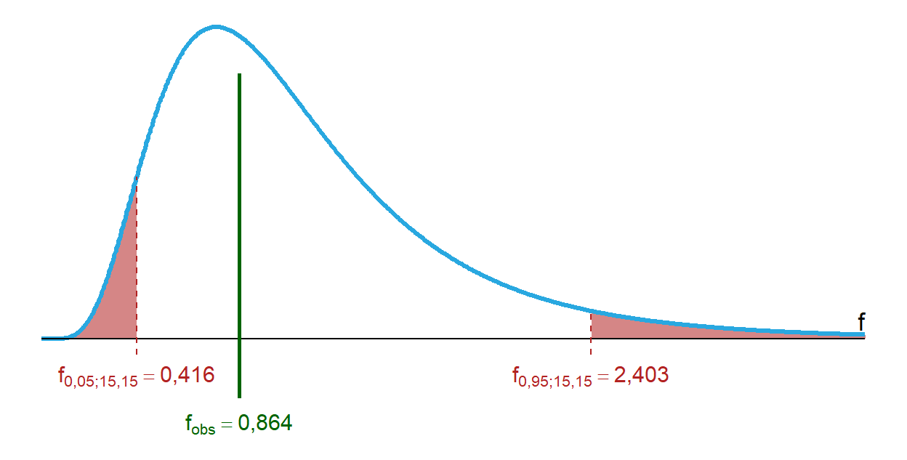
Una advertencia sobre esta prueba
La prueba F para comparar varianzas, igual que el intervalo para el cociente de varianzas, es relativamente sensible al supuesto de normalidad (Montgomery & Runger, 2018, pp. 268, 271). Por eso no se recomienda usarla como paso previo obligatorio para elegir entre la prueba t con varianzas iguales y la de Welch; es preferible usar directamente el método de Welch, como recomendamos en el capítulo 1 (Delacre et al., 2017).
10 Pruebas de hipótesis con R
Las funciones de R para las pruebas son las mismas que usamos en el capítulo 1 para los intervalos: la salida incluye el estadístico de prueba, los grados de libertad, el valor p y el intervalo de confianza. Los argumentos clave son mu (el valor de \(H_0\), \(\mu_0\) o \(\delta_0\)), alternative ("two.sided", "greater" o "less") y conf.level.
nivel1 <- c(14, 12, 15, 15, 11, 16, 17, 12, 14, 13, 18, 13, 18, 15, 16, 11)
nivel2 <- c(20, 22, 18, 18, 19, 15, 18, 15, 22, 18, 19, 15, 21, 22, 18, 16)
# Dos medias, varianzas iguales: H1: mu2 - mu1 > 2
t.test(nivel2, nivel1, mu = 2, alternative = "greater", var.equal = TRUE)
Two Sample t-test
data: nivel2 and nivel1
t = 2.5418, df = 30, p-value = 0.008217
alternative hypothesis: true difference in means is greater than 2
95 percent confidence interval:
2.706027 Inf
sample estimates:
mean of x mean of y
18.500 14.375 # Razón de varianzas, bilateral, alfa = 0.10
var.test(nivel1, nivel2, conf.level = 0.90)
F test to compare two variances
data: nivel1 and nivel2
F = 0.86389, num df = 15, denom df = 15, p-value = 0.7806
alternative hypothesis: true ratio of variances is not equal to 1
90 percent confidence interval:
0.3594375 2.0763112
sample estimates:
ratio of variances
0.8638889 # Dos proporciones: H1: p_pueblo > p_condado
prop.test(c(120, 240), c(200, 500), alternative = "greater", correct = FALSE)
2-sample test for equality of proportions without continuity correction
data: c(120, 240) out of c(200, 500)
X-squared = 8.2353, df = 1, p-value = 0.002054
alternative hypothesis: greater
95 percent confidence interval:
0.05219691 1.00000000
sample estimates:
prop 1 prop 2
0.60 0.48 # Muestras pareadas: H1: mu_D > 0
super_A <- c(5.2, 3.8, 12.5, 7.9, 2.4, 9.6, 4.3, 6.8)
super_B <- c(5.6, 4.1, 13.2, 8.1, 2.5, 10.4, 4.4, 7.3)
t.test(super_B, super_A, paired = TRUE, alternative = "greater")
Paired t-test
data: super_B and super_A
t = 4.1478, df = 7, p-value = 0.002153
alternative hypothesis: true mean difference is greater than 0
95 percent confidence interval:
0.2105046 Inf
sample estimates:
mean difference
0.3875
Cómo leer la salida de R
En la salida de t.test(), t es el valor observado del estadístico, df los grados de libertad y p-value el valor p. Si el valor p es menor o igual que \(\alpha\), se rechaza \(H_0\). Recuerde el orden: t.test(x, y) prueba hipótesis sobre \(\mu_X - \mu_Y\), de modo que si se invierte el orden de las muestras, también cambia el signo de la diferencia y la dirección de la alternativa.
10.1 Resumen del capítulo
La Tabla 7 reúne las pruebas del capítulo.
| Parámetro | Supuestos | Estadístico de prueba (bajo \(H_0\)) | Distribución | En R |
|---|---|---|---|---|
| \(\mu\) | Normal, \(\sigma^2\) conocida | \(\frac{\bar{X} - \mu_0}{\sigma/\sqrt{n}}\) | \(N(0,1)\) | Fórmula |
| \(\mu\) | Normal, \(\sigma^2\) desconocida | \(\frac{\bar{X} - \mu_0}{S/\sqrt{n}}\) | \(t(n-1)\) | t.test(x, mu =) |
| \(p\) | Muestra grande | \(\frac{\hat{p} - p_0}{\sqrt{p_0(1-p_0)/n}}\) | \(N(0,1)\) | prop.test(x, n, p =) |
| \(\sigma^2\) | Normal | \(\frac{(n-1)S^2}{\sigma_0^2}\) | \(\chi^2(n-1)\) | Fórmula |
| \(\mu_X - \mu_Y\) | Normales, varianzas conocidas | \(\frac{(\bar{X} - \bar{Y}) - \delta_0}{\sqrt{\sigma_X^2/n_X + \sigma_Y^2/n_Y}}\) | \(N(0,1)\) | Fórmula |
| \(\mu_X - \mu_Y\) | Normales, varianzas iguales | \(\frac{(\bar{X} - \bar{Y}) - \delta_0}{S_p\sqrt{1/n_X + 1/n_Y}}\) | \(t(n_X + n_Y - 2)\) | t.test(x, y, var.equal = TRUE) |
| \(\mu_X - \mu_Y\) | Normales, varianzas diferentes | \(\frac{(\bar{X} - \bar{Y}) - \delta_0}{\sqrt{S_X^2/n_X + S_Y^2/n_Y}}\) | \(\approx t(\nu)\) | t.test(x, y) |
| \(\mu_D\) | Diferencias pareadas normales | \(\frac{\bar{D} - \delta_0}{S_D/\sqrt{n}}\) | \(t(n-1)\) | t.test(x, y, paired = TRUE) |
| \(p_X - p_Y\) | Muestras grandes | \(\frac{\hat{p}_X - \hat{p}_Y}{\sqrt{\hat{p}(1-\hat{p})(1/n_X + 1/n_Y)}}\) | \(N(0,1)\) | prop.test(c(x, y), c(nx, ny)) |
| \(\sigma_X^2/\sigma_Y^2\) | Normales | \(\frac{S_X^2}{S_Y^2}\) | \(F(n_X-1, n_Y-1)\) | var.test(x, y) |
11 Ejercicios propuestos
11.1 Conceptos
Para cada situación, plantee \(H_0\) y \(H_1\) e indique si la prueba es bilateral o unilateral.
- Un fabricante afirma que sus bombillas duran en promedio 1000 horas, y una asociación de consumidores sospecha que duran menos.
- Un banco quiere saber si el tiempo promedio de atención en sus oficinas cambió después de implementar un nuevo sistema; antes era de 8 minutos.
- Una empresa de encuestas quiere saber si más del 50 % de los habitantes de una ciudad apoya un proyecto de transporte.
- Un ingeniero quiere verificar que la desviación estándar del diámetro de unas piezas no supere 0,1 mm.
En el contexto del ejercicio 1, literal a, describa en palabras qué significaría cometer un error tipo I y un error tipo II, y cuál de los dos tendría consecuencias más graves para los consumidores.
Un estudiante obtiene un valor p de 0,032 y concluye: “hay una probabilidad del 3,2 % de que la hipótesis nula sea verdadera”. ¿Es correcta su interpretación? Explique cuál es la interpretación correcta.
¿Cuál sería la decisión, con \(\alpha = 0{,}05\) y con \(\alpha = 0{,}01\), para valores p de 0,003, 0,02 y 0,08?
11.2 Pruebas para una población
El tiempo de vida de unas baterías tiene distribución normal con desviación estándar de 40 horas. El fabricante afirma que la duración media es de 500 horas. En una muestra de 25 baterías, la duración media fue de 482 horas. ¿Hay evidencia, con \(\alpha = 0{,}05\), de que la duración media es menor que la anunciada? Resuelva con la región de rechazo y con el valor p.
Con la base
pizza_delivery.xlsx, tome una muestra aleatoria de 20 entregas y pruebe, con \(\alpha = 0{,}05\), si el tiempo promedio de entrega es mayor de 30 minutos, cont.test(). Compare su conclusión con la de sus compañeros.Una aerolínea afirma que el 90 % de sus vuelos sale a tiempo. En una muestra de 200 vuelos, 170 salieron a tiempo. ¿Hay evidencia, con \(\alpha = 0{,}01\), de que la proporción es menor que la anunciada?
Las especificaciones de un proceso exigen que la varianza del grosor de unas láminas sea de 0,0025 mm². En una muestra de 20 láminas, la varianza fue de 0,0041 mm². Suponiendo normalidad, ¿hay evidencia, con \(\alpha = 0{,}05\), de que la varianza es diferente de la especificada?
Para el Ejemplo 3, calcule la potencia de la prueba si el colesterol promedio real de los pacientes de la clínica fuera de 205 mg/dL. ¿Qué pasaría con la potencia si la muestra fuera de 30 pacientes?
11.3 Pruebas para dos poblaciones
Dos métodos de producción se comparan según la resistencia, en MPa, de las piezas que producen. Con el método A, 12 piezas dieron una media de 48,2 y una desviación estándar de 2,1; con el método B, 15 piezas dieron una media de 46,5 y una desviación estándar de 2,4. Suponiendo poblaciones normales con varianzas iguales, ¿hay evidencia, con \(\alpha = 0{,}05\), de que el método A produce piezas más resistentes? Verifique el supuesto de varianzas iguales con \(\alpha = 0{,}10\).
Con la base
pizza_delivery.xlsx, pruebe con R, con \(\alpha = 0{,}05\):- si el tiempo medio de entrega de Bruno es diferente del de Mario;
- si la temperatura media de las pizzas de la sucursal Centre es mayor que la de la sucursal West. En cada caso, justifique si usa la prueba con varianzas iguales o la de Welch.
Con los datos de presión arterial del ejercicio 14 del capítulo 1, pruebe, con \(\alpha = 0{,}01\), si el tratamiento reduce la presión sistólica en más de 5 mmHg en promedio.
En una encuesta, 85 de 250 hombres y 112 de 300 mujeres dijeron preferir el transporte público. ¿Hay evidencia, con \(\alpha = 0{,}05\), de que las proporciones son diferentes? Resuelva a mano y con
prop.test().Un fabricante prueba dos tratamientos para reducir los defectos de una pieza. Con el tratamiento 1 resultaron 18 defectuosas de 300, y con el tratamiento 2, 32 de 320. ¿Hay evidencia, con \(\alpha = 0{,}05\), de que el tratamiento 1 produce una proporción menor de defectuosas?
Con los datos de los dos operarios del ejercicio 17 del capítulo 1, pruebe con \(\alpha = 0{,}05\) si el segundo operario es más irregular, es decir, si la varianza de sus tiempos es mayor.
Para los ejemplos del ruido y de la planta química, verifique que el intervalo de confianza que reporta R es coherente con la decisión de la prueba.
Referencias
Daniel, W. W. (1987). Bioestadística: Base para el análisis de las ciencias de la salud (M. Guzmán Ortiz & A. L. Babinsky Epstein, Trads.; 3.ª ed.). Limusa.
Delacre, M., Lakens, D., & Leys, C. (2017). Why Psychologists Should by Default Use Welch’s t-test Instead of Student’s t-test. International Review of Social Psychology, 30(1), 92-101. https://doi.org/10.5334/irsp.82
Devore, J. L. (2008). Probabilidad y estadística para ingeniería y ciencias (7.ª ed.). Cengage Learning.
Montgomery, D. C., & Runger, G. C. (2018). Applied Statistics and Probability for Engineers (7.ª ed.). Wiley.
Walpole, R. E., Myers, R. H., Myers, S. L., & Ye, K. (2012). Probabilidad y estadística para ingeniería y ciencias (9.ª ed.). Pearson Educación.
Wasserstein, R. L., & Lazar, N. A. (2016). The ASA Statement on p-Values: Context, Process, and Purpose. The American Statistician, 70(2), 129-133. https://doi.org/10.1080/00031305.2016.1154108